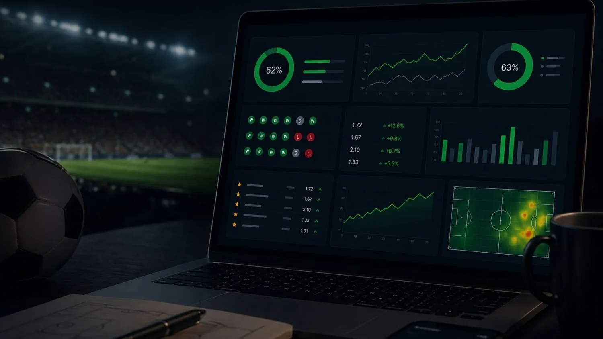
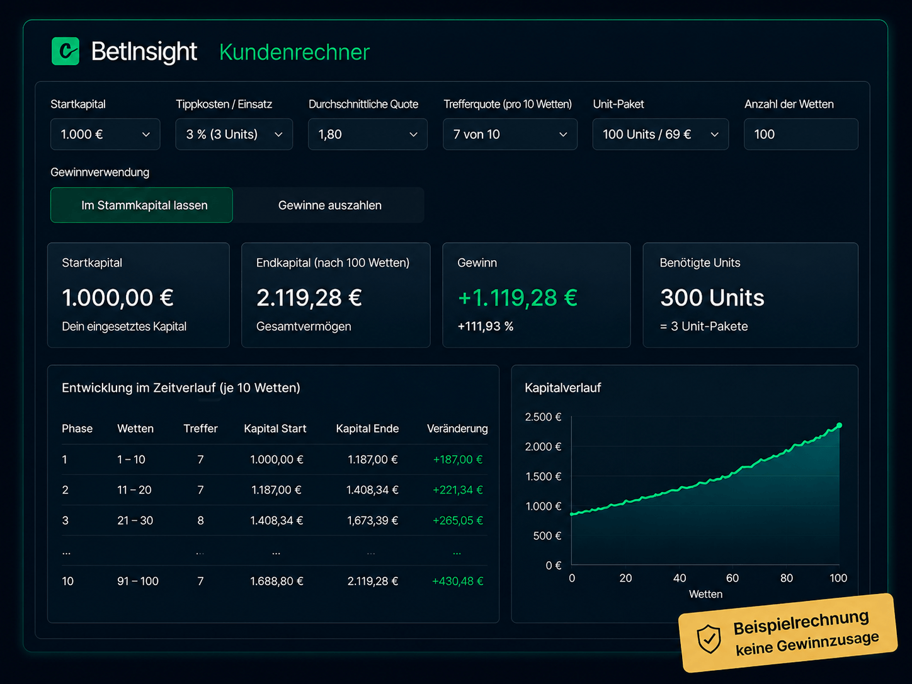

ANALYZE
Reale Spiele, strukturierte Analysen, Tipps, Ergebnisse, Statistik und Rechner.
Eine Plattform für reale Fußballanalysen, dokumentierte Ergebnisse, smarte Werkzeuge, Community, Live-Formate und historische Duelle mit TIME CLASH.
Die neue Startseite führt nicht mehr nur zu Tipps. Sie zeigt BetInsight als Plattform – mit klar getrennten Produktwelten und gemeinsamen Funktionen im Hintergrund.
Reale Spiele, strukturierte Analysen, Tipps, Ergebnisse, Statistik und Rechner.
Historische und hypothetische Duelle, Serien, Live-Ticker, Teams, Trainer und Rankings.
Profile, Community, Beiträge, Reaktionen, Galerie und gemeinsame Match-Erlebnisse.
Live-Alarm, Events, Workshops, Webinar und Academy an einem Ort.
Empfehlungen, Partnerprogramm, Marketing, Tracking und Netzwerk-Funktionen.
Fünf Wunschduelle rotieren automatisch – mit Länderflaggen und dezentem Stadion im Hintergrund. Nach dem fünften startet der Slider wieder beim ersten.
Die neue Plattform macht BetInsight größer – aber die reale Analysearbeit bleibt ein eigener, klar sichtbarer Kern. Die Namen müssen dabei nicht im Vordergrund stehen; entscheidend sind Erfahrung, Arbeitsweise und Transparenz.
Langjährige Analyse- und Tipp-Erfahrung als Grundlage für strukturierte Match-Bewertungen.
Seit fünf Jahren hauptberufliche Beschäftigung mit Analyse, Vorbereitung und Einordnung von Sporttipps.
Zwei feste Tippgeber arbeiten mit klaren Rollen, gemeinsamer Vorbereitung und einheitlicher Unit-Gewichtung.

Die Statistik bleibt ein Hauptfaktor der Startseite. Besucher sollen schnell sehen können, wie die Auswertung aufgebaut ist und welche Unterschiede sich mit oder ohne Zinseszins ergeben.
Der Rechner bleibt prominent. Nutzer können Startkapital, Einsatzhöhe, Quote, Trefferquote und Gewinnverwendung simulieren und unterschiedliche Szenarien vergleichen.

Ein Blick in die BetInsight-Community: aktuelle globale Beiträge von Trainerprofilen mit Team, Rang, Reaktionen und direktem Weg zum öffentlichen Profil.
Von unseren Tippgebern vorbereitet, nachvollziehbar eingeordnet und mit klarer Unit-Gewichtung veröffentlicht.
Tipps & ErgebnisseProfile, Community, Beiträge, Reaktionen und gemeinsame Match-Erlebnisse.
Live-Alarm, Events, Workshops, Webinar und Academy.
Events ansehenEmpfehlungen, Partnerprogramm, Marketing-Material, Tracking und Netzwerk-Funktionen.
Network öffnenWas heute aus Analyse, TIME CLASH, Community, Live und Network besteht, ist die Basis für weitere Werkzeuge und Sportwelten. Neue Module können ergänzt werden, ohne dass der Nutzer das BetInsight-System verlassen muss.
Von strukturierten Profi-Tipps und Unit-Gewichtung bis zu Statistik, Rechner, Live-Alarm, Webinaren, Community und TIME CLASH: dein Account verbindet alle Bereiche auf einer Plattform.